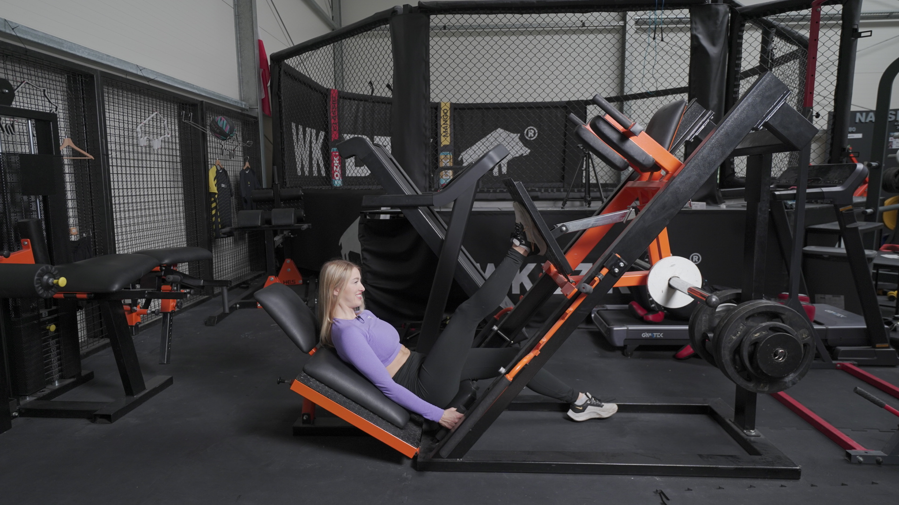
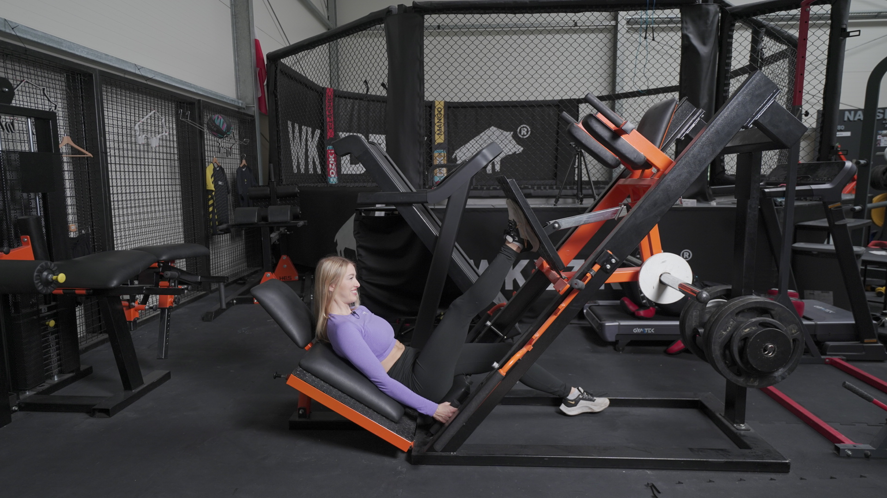

WYCISKANIE NA SUWNICY JEDNONÓŻ
 

1. Stopy ustaw na platformie do wyciskania. Oderwij jedną ze stóp, a drugą przesuń delikatnie ku środkowi platformy.
2. Palce skieruj przed siebie lub minimalnie na zewnątrz.
3. Drugą nogę wyprostuj lub przełóż nieco na bok, aby nie przeszkadzała Ci w trakcie ruchu.
4. Ułóż się tak, aby plecy w odcinku lędźwiowym przylegały do oparcia.
5. Weź głęboki wdech i zepnij brzuch.
6. Odbezpiecz suwnicę i rozpocznij ruch uginania kolan, kierując je na zewnątrz.
7. Zejdź tak nisko, jak pozwala Ci Twoja mobilność. Zadbaj o to, aby miednica nie podwijała się za mocno (delikatne podwijanie jest akceptowane).
8. W górnej fazie ruchu nie doprowadzaj do przeprostu kolana. Pozostaw je delikatnie ugięte.